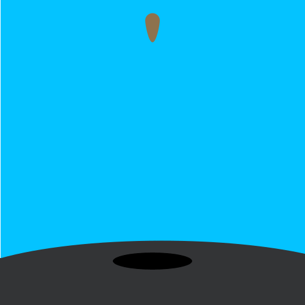

Морква — це один з найпопулярніших овочів на території України, який вирощують у багатьох регіонах країни. Україна є однією з провідних країн-експортерів моркви, зокрема, в Європейський Союз.
Україна відома своїми піднесеними ґрунтами, що є сприятливим фактором для вирощування моркви. Крім того, морква є достатньо морозостійкою культурою і може вирощуватися в більшості регіонів України. 
У багатьох регіонах України, зокрема в Житомирській, Волинській, Київській та Львівській областях, моркву вирощують на великих площах, що забезпечує її високу врожайність і якість.
Українські фермери вирощують різні сорти моркви, зокрема кільцевидну, кримську, нантську та інші. Вирощування моркви є одним з найбільш прибуткових напрямків овочівництва в Україні.